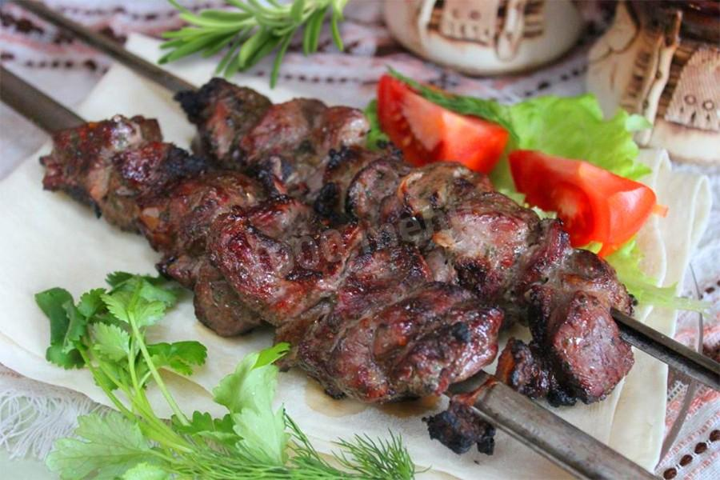

| Название блюда | Оценка | Ссылка на рецепт | Фото блюда |
|---|---|---|---|
| Кальцоне с ветчиной | 6 | Рецепт кальцоне с ветчиной | |
| Пельмени в горшочках с сыром | 7 | Рецепт пельменей в горшочках с сыром | |
| Вепрево колено по чешски | 8 | Рецепт вепрева колена по чешски | |
| Строганина из пеламиды | 9 | Рецепт строганины из пеламиды | |
| Шашлык из баранины на углях | 10 | Рецепт шашлыка из баранины |  |